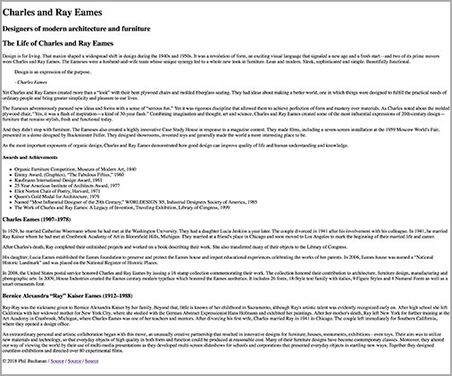
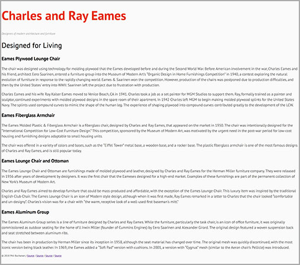
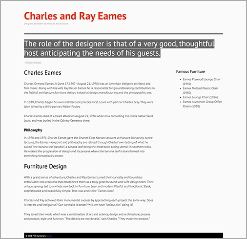

In-Class Exercises
Between weeks 6 and 11 of this course, your instructor will deliver comprehensive lectures on HTML/CSS programming and best practices followed by in-class hands-on tutorials. For each in-class exercise (ICE), you are given a starting document(s) and a screenshot(s) of the final outcome. By the end of each class, you should modify the starting document to recreate the final HTML and CSS documents – as close as possible to the provided screenshot. All of your code should be validated with the HTML Validator and CSS Validator before submission.
In-Class Exercise 1: HTML (2%)
Due week 6: February 14 (at the end of class)
Recreate the following screenshot using only HTML elements/tags/attributes and proper values. Do not forget to validate your code.

Download the:
- Starter document (zip) (Right-click and Download Linked File As...)
- High resolution image (Right-click and Download Linked File As...)
In-Class Exercise 2: CSS (2%)
Due week 8: February 28 (at the end of class)
Recreate the following screenshot using HTML/CSS. Do not forget to validate your code. Do not forget to validate your HTML and validate your CSS.

Download the:
- Starter document (zip) (Right-click and Download Linked File As...)
- High resolution image (Right-click and Download Linked File As...)
In-Class Exercise 3: Box Model (2%)
Due week 9: March 7 (at the end of class)
Recreate the following screenshot using HTML/CSS. Do not forget to validate your code. Do not forget to validate your HTML and validate your CSS.

Download the:
- Starter documents (zip) (Right-click and Download Linked File As...)
- High resolution image (Right-click and Download Linked File As...)